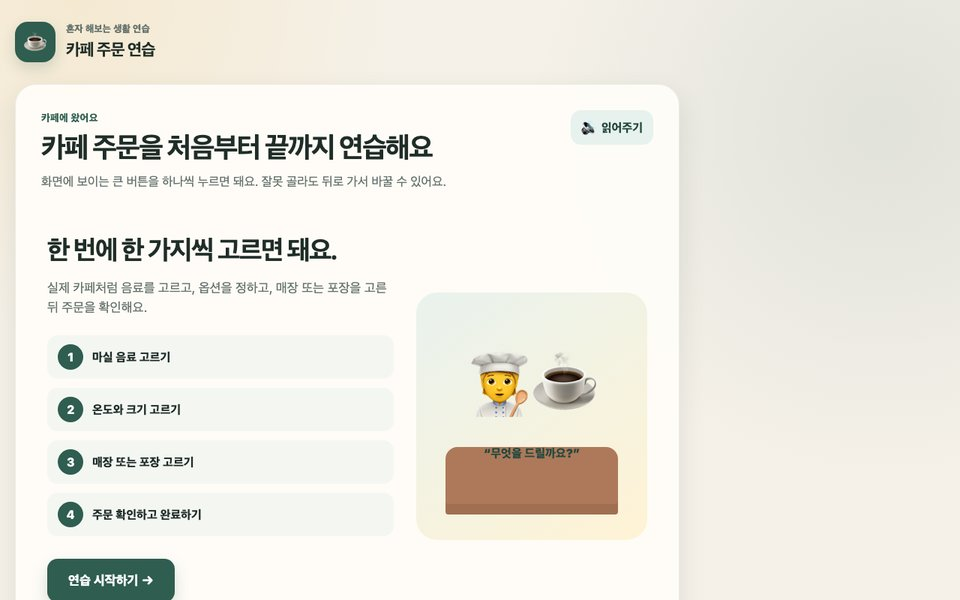
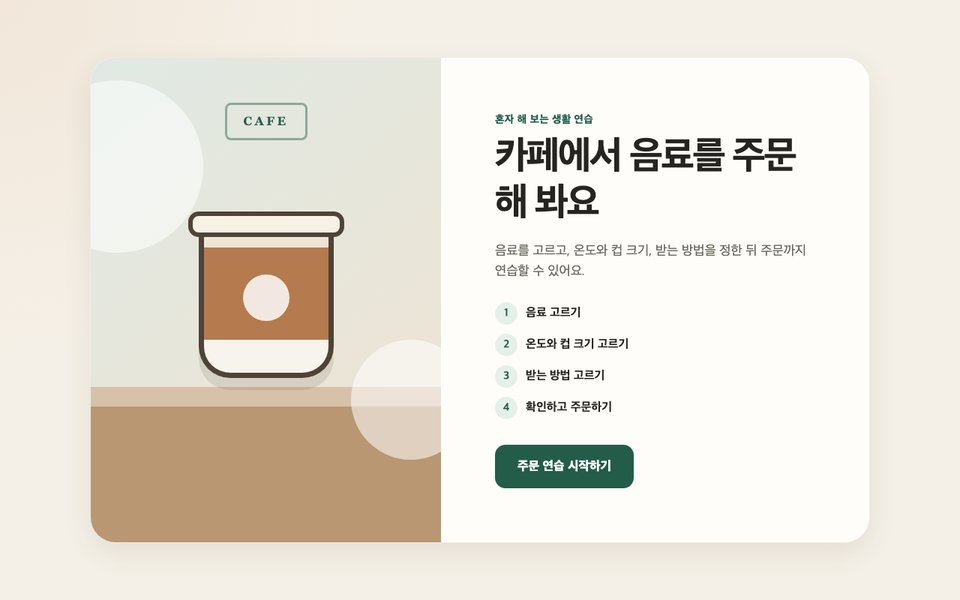
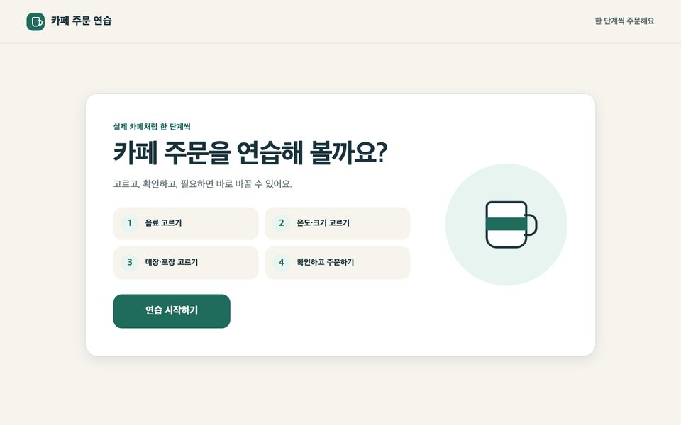
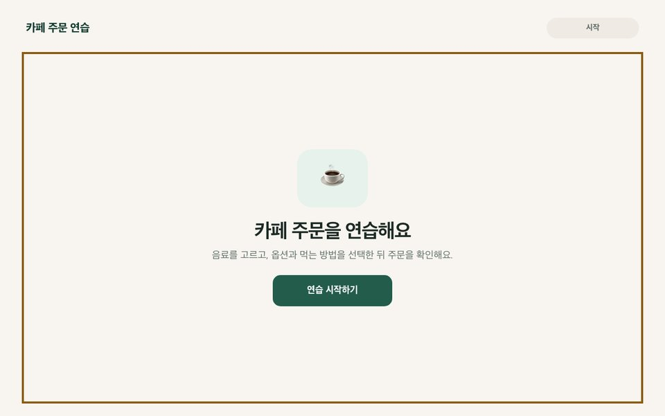

그럴싸한 화면과 쓸 수 있는 화면
한 화면 한 행동, 실수해도 돌아가기
화면 기준을 파일로 남긴다
시안 도구는 필요한 만큼만
작게 만들고 직접 확인한다
수업·생활·업무 자료 하나 만들기
기능을 만드는 데서 멈추지 않고, 학생이 끝까지 쓰는 도구로
시작부터 끝까지의 전체 경험
순서 · 이해 · 실수 · 되돌아가기 · 완료
학교 행사의 동선
눈에 보이고 누르는 것
버튼 · 글자 · 색 · 배치
행사장의 안내 표지판
예: 카페 주문 연습
큰 '시작' 버튼 하나
음료 그림 2개 중 고르기
작은 컵과 큰 컵
고른 것을 보고 '주문하기'
칭찬과 '다시 하기'
원칙은 출발점이고, 기준은 우리 학생이다
지금 할 일 하나만 보이게 한다
2개로 시작해 익숙해지면 늘린다
글을 못 읽어도 고를 수 있게 한다
단계 표시로 남은 과정을 알린다
'이전'과 '다시 하기'를 늘 둔다
버튼은 크게, 버튼 사이는 넉넉히
교사용 설정 하나로 난이도를 바꾼다
그림 선택지 2개
소리 안내 켜기
선택지 4개
글자 안내
실제 메뉴판처럼
가격 계산까지
"다시 골라 볼까요?"
정답 버튼을 살짝 강조한다
정답을 보여 주고 함께 누른다
바로, 구체적으로: "큰 컵을 골랐어요!"
빨간 X와 경고음만 주는 화면
매번 '버튼 크게'라고 말하지 않아도 되게
시안 도구는 필요한 만큼만 고른다
DESIGN.md를 주고 화면을 그리게 한다
무엇을 눌러야 할지 바로 보이나?
고칠 점을 말로 짚어 다시 그린다
정한 시안과 DESIGN.md를 함께 준다
| 이럴 때 | 도구 | 특징 |
|---|---|---|
| 모양만 빠르게 보고 싶다 | ChatGPT · Gemini | 말로 그림 시안을 받는다 (오늘 실습) |
| 눌러 보며 흐름을 보고 싶다 | Google Stitch | 클릭되는 시안, DESIGN.md를 주고받는다 |
| 대화로 다듬어 바로 만들고 싶다 | Claude Design | 댓글·직접 수정, Claude Code로 넘긴다 (유료 플랜 연구 프리뷰) |
| 여럿이 정밀하게 다듬는다 | Figma | 컴포넌트·변수로 관리하고 Figma MCP로 AI가 설계 구조를 읽는다 |
"버튼 사이를 더 넓혀 줘"
"글자는 그림 아래로"
"배경 장식은 모두 빼 줘"
카페 주문 연습 사이트 · 버전 1 → 2 → 3으로 고쳐 가며 비교

A요청문만 주고
AI에게 맡긴다

B화면 기준 파일을
함께 준다

C고정한 설계를
읽게 한다

D · 진행 중설계를 규격 삼아
활용한다
작게 만들고, 직접 확인하고, 주소 하나로 연다
시작과 메뉴 고르기
눌러 보고 고친다
크기 고르기, 주문 확인
처음부터 끝까지 해 본다
자유롭게 시작하고, 작은 결과를 직접 확인한다
| 구분 | 설치 없이 (브라우저) | 설치해서 (내 PC) |
|---|---|---|
| 도구 | ChatGPT · Gemini · Claude | Codex · Claude Code · Antigravity |
| 규칙과 자료 | 프로젝트·Gem의 지침과 파일 | 폴더 속 AGENTS.md 등 파일 |
| 결과 보기 | 대화창에서 바로 미리보기 | 만든 파일을 브라우저로 열기 |
| 알맞은 때 | 한두 화면짜리 자료, 오늘 실습 | 여러 화면, 오래 고쳐 가는 자료 |
이름·사진·진단명 대신
'학생 A'와 수행 특성만
AI는 교사가 쓰고,
학생은 만든 화면만 쓴다
무료 GitHub Pages에는
학생 기록을 두지 않는다
직접 만들었거나
사용 허락이 분명한 그림
학교 계정은
필요한 것만 연결한다
안내 문구·가격·사실은
AI가 틀릴 수 있다
카페 주문, 편의점,
병원 접수
버스 타고 내리기, 교통카드 찍기
오늘 일정, 준비물, 급식 순서
감정 고르기, 도움 요청하기
작업 순서 익히기, 물건 분류
수업 타이머, 안전 안내문,
1부에서 적은 불편
학생 생활 전반을 관리하는 플랫폼
예: 음료를 고르고 확인하는 작은 화면
시간과 순서는 예시다. 미정은 만들면서 보완한다
떠오른 생각과
사용 상황
(10분)
필요한 질문과
짧은 문서 초안
(10분)
DESIGN.md,
시안은 선택
(10분)
단계별로
만들고 확인
(20분)
주소나
화면을 나눈다
(10분)
누구에게 도움이 되면
좋을까?
새로 만들거나
바꿔 보고 싶은 것
써 본 뒤 볼 내용이나
행동 한 가지
| 상황 | 이렇게 요청한다 |
|---|---|
| 화면이 열리지 않는다 | "오류 메시지를 붙여 넣을게. 원인과 고치는 방법을 알려 줘" |
| AI가 너무 많이 바꿨다 | "방금 바꾼 것을 되돌리고, 요청한 부분만 다시 해 줘" |
| 대화가 길어져 헷갈린다 | "HANDOFF.md를 갱신해 줘" → 새 대화에서 이어 가기 |
| 같은 실패가 세 번째다 | 멈추고 요청을 더 작게 나눈다 |
오늘 만든 자료를 다음 주 수업에서 한 번 써 보세요